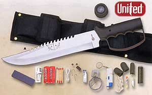

Featured Member Video
How To Use Various Fire StartersMore Videos by crashdive123
View larger or ask the author a question.
View all wilderness survival videos
Recent Forum Posts 
| Thread Title | Replies |
| Lost in the jungle at night | 7 |
| Chinese Fishing Lures on Ebay | 1 |
| So, how ‘bout that carona virus? | 310 |
| New washing machine!? | 6 |
| Hi | 2 |
| What are you cooking today and how? | 2283 |
| I'm Pretty Proud... | 28 |
| Pet hair | 31 |
| Hey everyone | 1 |
| Which skateboard should be the best... | 18 |
Come Join the Discussion Today!
Our site has been mentioned in:
U.S. News and World Report
Best of the Web - Site of the Week 8/6/01
Discovery Channel Canada
One Week in the Wilderness
USA Today
Hot Sites 08/08/2005
EDIBILITY OF PLANTS
The information on this page is presented in an older format. We have vastly expanded our edible plants information with far more information, and far more plants. You can find this information at our new site Wildcrafting.net
Plants are valuable sources of food because they are widely available, easily procured, and, in the proper combinations, can meet all your nutritional needs.
|
WARNING The critical factor in using plants for food is to avoid accidental poisoning. Eat only those plants you can positively identify and you know are safe to eat. |
Absolutely identify plants before using them as food. Poison hemlock has killed people who mistook it for its relatives, wild carrots and wild parsnips.
At times you may find yourself in a situation for which you could not plan. In this instance you may not have had the chance to learn the plant life of the region in which you must survive. In this case you can use the Universal Edibility Test to determine which plants you can eat and those to avoid.
It is important to be able to recognize both cultivated and wild edible plants in a survival situation. Most of the information in this chapter is directed towards identifying wild plants because information relating to cultivated plants is more readily available.
Remember the following when collecting wild plants for food:
- Plants growing near homes and occupied buildings or along roadsides may have been sprayed with pesticides. Wash them thoroughly. In more highly developed countries with many automobiles, avoid roadside plants, if possible, due to contamination from exhaust emissions.
- Plants growing in contaminated water or in water containing Giardia lamblia and other parasites are contaminated themselves. Boil or disinfect them.
- Some plants develop extremely dangerous fungal toxins. To lessen the chance of accidental poisoning, do not eat any fruit that is starting to spoil or showing signs of mildew or fungus.
- Plants of the same species may differ in their toxic or subtoxic compounds content because of genetic or environmental factors. One example of this is the foliage of the common chokecherry. Some chokecherry plants have high concentrations of deadly cyanide compounds while others have low concentrations or none. Horses have died from eating wilted wild cherry leaves. Avoid any weed, leaves, or seeds with an almondlike scent, a characteristic of the cyanide compounds.
- Some people are more susceptible to gastric distress (from plants) than others. If you are sensitive in this way, avoid unknown wild plants. If you are extremely sensitive to poison ivy, avoid products from this family, including any parts from sumacs, mangoes, and cashews.
- Some edible wild plants, such as acorns and water lily rhizomes, are bitter. These bitter substances, usually tannin compounds, make them unpalatable. Boiling them in several changes of water will usually remove these bitter properties.
- Many valuable wild plants have high concentrations of oxalate compounds, also known as oxalic acid. Oxalates produce a sharp burning sensation in your mouth and throat and damage the kidneys. Baking, roasting, or drying usually destroys these oxalate crystals. The corm (bulb) of the jack-in-the-pulpit is known as the "Indian turnip," but you can eat it only after removing these crystals by slow baking or by drying.
|
WARNING Do not eat mushrooms in a survival situation! The only way to tell if a mushroom is edible is by positive identification. There is no room for experimentation. Symptoms of the most dangerous mushrooms affecting the central nervous system may show up after several days have passed when it is too late to reverse their effects. |
Plant Identification
You identify plants, other than by memorizing particular varieties through familiarity, by using such factors as leaf shape and margin, leaf arrangements, and root structure.
The basic leaf margins (Figure 9-1) are toothed, lobed, and toothless or smooth.

These leaves may be lance-shaped, elliptical, egg-shaped, oblong, wedge-shaped, triangular, long-pointed, or top-shaped (Figure 9-2).

The basic types of leaf arrangements (Figure 9-3) are opposite, alternate, compound, simple, and basal rosette.

The basic types of root structures (Figure 9-4) are the bulb, clove, taproot, tuber, rhizome, corm, and crown. Bulbs are familiar to us as onions and, when sliced in half, will show concentric rings. Cloves are those bulblike structures that remind us of garlic and will separate into small pieces when broken apart. This characteristic separates wild onions from wild garlic. Taproots resemble carrots and may be single-rooted or branched, but usually only one plant stalk arises from each root. Tubers are like potatoes and daylilies and you will find these structures either on strings or in clusters underneath the parent plants. Rhizomes are large creeping rootstock or underground stems and many plants arise from the "eyes" of these roots. Corms are similar to bulbs but are solid when cut rather than possessing rings. A crown is the type of root structure found on plants such as asparagus and looks much like a mophead under the soil's surface.

Learn as much as possible about plants you intend to use for food and their unique characteristics. Some plants have both edible and poisonous parts. Many are edible only at certain times of the year. Others may have poisonous relatives that look very similar to the ones you can eat or use for medicine.
Universal Edibility Test
There are many plants throughout the world. Tasting or swallowing even a small portion of some can cause severe discomfort, extreme internal disorders, and even death. Therefore, if you have the slightest doubt about a plant's edibility, apply the Universal Edibility Test (Figure 9-5) before eating any portion of it.

Before testing a plant for edibility, make sure there are enough plants to make the testing worth your time and effort. Each part of a plant (roots, leaves, flowers, and so on) requires more than 24 hours to test. Do not waste time testing a plant that is not relatively abundant in the area.
Remember, eating large portions of plant food on an empty stomach may cause diarrhea, nausea, or cramps. Two good examples of this are such familiar foods as green apples and wild onions. Even after testing plant food and finding it safe, eat it in moderation.
You can see from the steps and time involved in testing for edibility just how important it is to be able to identify edible plants.
To avoid potentially poisonous plants, stay away from any wild or unknown plants that have--
- Milky or discolored sap.
- Beans, bulbs, or seeds inside pods.
- Bitter or soapy taste.
- Spines, fine hairs, or thorns.
- Dill, carrot, parsnip, or parsleylike foliage.
- "Almond" scent in woody parts and leaves.
- Grain heads with pink, purplish, or black spurs.
- Three-leaved growth pattern.
Using the above criteria as eliminators when choosing plants for the Universal Edibility Test will cause you to avoid some edible plants. More important, these criteria will often help you avoid plants that are potentially toxic to eat or touch.
An entire encyclopedia of edible wild plants could be written, but space limits the number of plants presented here. Learn as much as possible about the plant life of the areas where you train regularly and where you expect to be traveling or working. Listed below and later in this chapter are some of the most common edible and medicinal plants. Detailed descriptions and photographs of these and other common plants are at Appendix B.
- Amaranth (Amaranthus retroflexus and other species)
- Arrowroot (Sagittaria species)
- Asparagus (Asparagus officinalis)
- Beechnut (Fagus species)
- Blackberries (Rubus species)
- Blueberries (Vaccinium species)
- Burdock (Arctium lappa)
- Cattail (Typha species)
- Chestnut (Castanea species)
- Chicory (Cichorium intybus)
- Chufa (Cyperus esculentus)
- Dandelion (Taraxacum officinale)
- Daylily (Hemerocallis fulva)
- Nettle (Urtica species)
- Oaks (Quercus species)
- Persimmon (Diospyros virginiana)
- Plantain (Plantago species)
- Pokeweed (Phytolacca americana)
- Prickly pear cactus (Opuntia species)
- Purslane (Portulaca oleracea)
- Sassafras (Sassafras albidum)
- Sheep sorrel (Rumex acetosella)
- Strawberries (Fragaria species)
- Thistle (Cirsium species)
- Water lily and lotus (Nuphar, Nelumbo, and other species)
- Wild onion and garlic (Allium species)
- Wild rose (Rosa species)
- Wood sorrel (Oxalis species)
|
TROPICAL ZONE FOOD PLANTS |
- Bamboo (Bambusa and other species)
- Bananas (Musa species)
- Breadfruit (Artocarpus incisa)
- Cashew nut (Anacardium occidental)
- Coconut (Cocos nucifera)
- Mango (Mangifera indica)
- Palms (various species)
- Papaya (Carica species)
- Sugarcane (Saccharum officinarum)
- Taro (Colocasia species)
|
DESERT ZONE FOOD PLANTS |
- Acacia (Acacia farnesiana)
- Agave (Agave species)
- Cactus (various species)
- Date palm (Phoenix dactylifera)
- Desert amaranth (Amaranths palmeri)
Seaweeds
One plant you should never overlook is seaweed. It is a form of marine algae found on or near ocean shores. There are also some edible freshwater varieties. Seaweed is a valuable source of iodine, other minerals, and vitamin C. Large quantities of seaweed in an unaccustomed stomach can produce a severe laxative effect.
When gathering seaweeds for food, find living plants attached to rocks or floating free. Seaweed washed onshore any length of time may be spoiled or decayed. You can dry freshly harvested seaweeds for later use.
Its preparation for eating depends on the type of seaweed. You can dry thin and tender varieties in the sun or over a fire until crisp. Crush and add these to soups or broths. Boil thick, leathery seaweeds for a short time to soften them. Eat them as a vegetable or with other foods. You can eat some varieties raw after testing for edibility.
|
SEAWEEDS |
- Dulse (Rhodymenia palmata)
- Green seaweed (Ulva lactuca)
- Irish moss (Chondrus crispus)
- Kelp (Alaria esculenta)
- Laver (Porphyra species)
- Mojaban (Sargassum fulvellum)
- Sugar wrack (Laminaria saccharina)
Preparation of Plant Food
Although some plants or plant parts are edible raw, you must cook others to be edible or palatable. Edible means that a plant or food will provide you with necessary nutrients, while palatable means that it actually is pleasing to eat. Many wild plants are edible but barely palatable. It is a good idea to learn to identify, prepare, and eat wild foods.
Methods used to improve the taste of plant food include soaking, boiling, cooking, or leaching. Leaching is done by crushing the food (for example, acorns), placing it in a strainer, and pouring boiling water through it or immersing it in running water.
Boil leaves, stems, and buds until tender, changing the water, if necessary, to remove any bitterness.
Boil, bake, or roast tubers and roots. Drying helps to remove caustic oxalates from some roots like those in the Arum family.
Leach acorns in water, if necessary, to remove the bitterness. Some nuts, such as chestnuts, are good raw, but taste better roasted.
You can eat many grains and seeds raw until they mature. When hard or dry, you may have to boil or grind them into meal or flour.
The sap from many trees, such as maples, birches, walnuts, and sycamores, contains sugar. You may boil these saps down to a syrup for sweetening. It takes about 35 liters of maple sap to make one liter of maple syrup!
| Ultimate Survival Knife & Kit  |
List Price: 61.99 Our Price: 39.95 |
This 15 inch survival knife with drop point blade features a thick quality stainless steel blade with serrated top edge. Textured and ribbed solid metal handle and guard. Nylon sheath. Survival kit includes a hollow grip with a compass top to store items within the knife itself, as well as additional pouches on the sheath to hold the rest. Complete survival kit. Click Here to Buy the Survival Knife Now. |
|